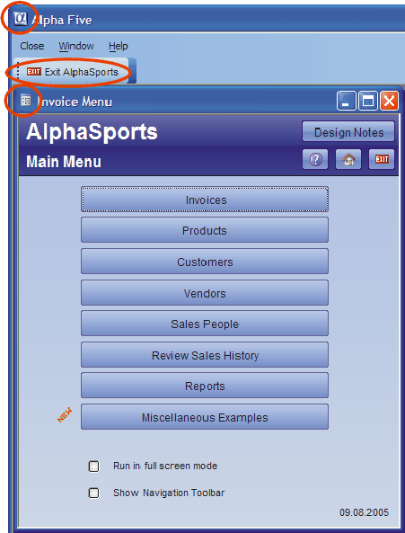

Ending the AlphaSports Application
Overview
The CanExit event provides the developer with a way to intercept a close form (and, in this case, exit application) command, and then:
accept the close command
reject the close command
run other routines before accepting or rejecting the close command
There are five different ways that the user can exit from the application:
The Close button on the MainMenu toolbar.
The Exit AlphaSports button on the MainMenu toolbar.
The Close (X) function in the Control - Menu Box in the upper left corner of the form.
The
 button in the upper right corner of the form.
button in the upper right corner of the form.The OnPush event of the exit door icon on the form, which runs the exit_application script.

MainMenu Menu
The Close button on the MainMenu menu executes the line of code shown below. The context of the command is the currently active form, which is the Main Menu. as a result, the word "THIS" refers to the Main Menu.
|
THIS.CLOSE() |
Xbasic Code Run by the Exit AlphaSports Button
The Exit AlphaSports button on the MainMenu toolbar runs the following Xbasic code.
|
close_all_windows(.f.) ControlPanel.show() controlpanel.activate() this.close() |
An Explanation of the Xbasic Code
The first line uses the close_all_windows(?) function to close any open forms, including the Main Menu.
|
close_all_windows(.f.) |
The next line shows the Control Panel. We want you to see it, but your application might want to hide the Control Panel.
|
ControlPanel.show() |
Next, give the Control Panel focus so it responds to user input.
|
controlpanel.activate() |
Finally, close the MainMenu toolbar.
|
this.close() |
The CanExit event intercepts the form's Close button function and provides an opportunity to cancel the close. This single line of code calls the close_all_windows() function, which asks the user if he wants to continue with or cancel the close action. Refer to the close_all_windows function.
|
close_all_windows() |
Xbasic Code Run by the Main Menu OnExit Event
The OnExit event closes the Navigation toolbar, if it is still open, and then displays the Control Panel.
|
if (eval_valid("vcToolbarName")) then if (ui_modeless_dlg_exist(vcToolbarName)) then ui_modeless_dlg_close(vcToolbarName) end if end if controlpanel.show() |
An Explanation of the Xbasic Code
The first line of code uses the eval_valid() function to test if the vcToolbarName variable exists. The eval_valid() function will return false if the vcToolbarName shared variable was not created or went out of scope.
|
if (eval_valid("vcToolbarName")) then |
Double check by directly asking if the toolbar is open with the ui_modeless_dlg_exist() function.
|
if (ui_modeless_dlg_exist(vcToolbarName)) then |
If the answer is true, close the toolbar with the ui_modeless_dlg_close() function.
|
ui_modeless_dlg_close(vcToolbarName) end if end if |
Now display the Control Panel.
|
controlpanel.show() |
The OnPush event of the Bar1 graphic runs the exit_application script, which has five steps.
Step one contains inline Xbasic. The form contains two versions of the bitmaps displayed at the lower right corner of the form. The version on the top (Bar1) contains the image of the open door. The version on the bottom (Bar2) contains the image of the closed door.
Steps two is an Action Script that displays a message box to confirm that the user wants to exit the application. It sets the variable exit_YES_Button to .T. or sets the variable exit_NO_Button to .T..
Step 3 contains inline Xbasic that runs if the exit_NO_Button value is .T..
Step 4 contains inline Xbasic that runs if the exit_YES_Button value is .T..
Step 5 is an Action Script that closes the current form.
|
' Hide the open door Bar1.hide() ' Display the closed door Bar2.show() |
|
' Show the open door Bar1.show() ' Hide the closed door Bar2.hide() |
|
close_all_windows(.f.) |
The close_all_windows() ' function asks the user if wants to continue with or cancel the close.
|
function close_all_windows as C (prompt = .t.) msg = "Close all open windows before ending the application?" if (prompt = .t.) then q_close = ui_msg_box("AlphaSports", msg, UI_YES_NO_CANCEL + ui_question_symbol) else q_close = ui_yes_selected end if if (q_close = ui_yes_selected) then open_windows = a5_list_open_windows() current_window = topparent.name() open_windows = word_subtract(open_windows, \ current_window, crlf()) cmd = *for_each(x, x + ".close()", open_windows) evaluate_template(cmd) else if (q_close = ui_cancel_selected) then cancel() end if end function |
An Explanation of the close_all_windows() function
The function optionally receives a variable named prompt as an argument. If the argument is not received, it has a default value of true ( .t. ).
|
function close_all_windows as C (prompt = .t.) |
Define a message that we might use later.
|
msg = "Close all open windows before ending the application?" |
If the value of prompt is true, then display this message with three options: yes, no, or cancel.
|
if (prompt = .t.) then q_close = ui_msg_box("AlphaSports", msg, UI_YES_NO_CANCEL + ui_question_symbol) |
If the value of prompt passed to the function is false ( .f. ), then ignore the user's action and force the answer to be YES.
|
else q_close = ui_yes_selected end if |
If the answer was yes, then user the a5_list_open_windows() function returns a list of all open windows.
|
if (q_close = ui_yes_selected) then open_windows = a5_list_open_windows() |
Get the name of the Main Menu form.
|
current_window = topparent.name() |
Remove the Main Menu from the list.
|
open_windows = word_subtract(open_windows, current_window, crlf()) |
Generate the Xbasic command that will close all of the open windows.
|
cmd = *for_each(x, x + ".close()", open_windows) |
Now execute the Xbasic command constructed above.
|
evaluate_template(cmd) |
If the answer was cancel, use the cancel()command to abort the close.
|
else if (q_close = ui_cancel_selected) then cancel() end if end function |
See Also
Creating the Navigation Toolbar, Displaying the Main Menu, Displaying the Navigation Toolbar, Starting the AlphaSports Application, The Main Menu Form